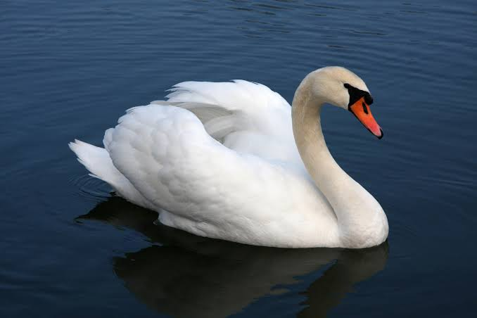

Swan
Birds
Swans are birds of the family Anatidae within the genus Cygnus. The swans' closest relatives include the geese and ducks. Swans are grouped with the closely related geese in the subfamily Anserinae where they form the tribe Cygnini. Sometimes, they are considered a distinct subfamily, Cygninae.
Scientific name: Cygnus
Family: Anatidae
Class: Aves
Mass: Mute swan: 11 – 12 kg, Black swan: 3.7 – 9 kg, Whooper swan: 9.8 – 11 kg
Wingspan: Mute swan: 2 – 2.4 m, Black swan: 1.6 – 2 m, Whooper swan: 2 – 2.8 m
Length: Mute swan: 1.2 – 1.7 m, Black swan: 1.1 – 1.4 m, Whooper swan: 1.4 – 1.6 m
Swan, largest waterfowl species of the subfamily Anserinae, family Anatidae (order Anseriformes). Most swans are classified in the genus Cygnus.
Swans are gracefully long-necked, heavy-bodied, big-footed birds that glide majestically when swimming and fly with slow wingbeats and with necks outstretched. They migrate in diagonal formation or V-formation at great heights, and no other waterfowl moves as fast on the water or in the air.
Swans feed by dabbling (not diving) in shallows for aquatic plants. Swimming or standing, the mute (C. olor) and black (C. atratus) swans often tuck one foot over the back. Male swans, called cobs, and females, called pens, look alike.
Legend to the contrary, swans utter a variety of sounds from the windpipe, which in some species is looped within the breastbone (as in cranes); even the mute swan, the least vocal species, often hisses, makes soft snoring sounds, or grunts sharply.
Swans are sociable except in breeding season. They mate for life. Courtship involves mutual bill dipping or head-to-head posturing.
The pen incubates, on average, a half-dozen pale unmarked eggs on a heap of vegetation while the cob keeps close guard; in some species he takes his turn at brooding. After repulsing an enemy, swans utter a triumph note, as geese do.
The young, called cygnets, emerge short-necked and thickly downed; though capable of running and swimming a few hours after hatching, they are carefully tended for several months; in some species they may ride about on their mother’s back.
Immature birds wear mottled gray or brown plumage for two or more years. Swans mature in the third or fourth year and live perhaps 20 years in the wild and 50 years or more in captivity.
Biology of Swan
Behaviour
Swans feed in water and on land. They are almost entirely herbivorous, although they may eat small amounts of aquatic animals. In the water, food is obtained by up-ending or dabbling, and their diet is composed of the roots, tubers, stems and leaves of aquatic and submerged plants.
Mute swan threatens a photographer in Toyako, Japan.
Mute swan and cygnets
Mute swan and nine cygnets
Black swan and cygnet
Swans famously mate for life, and typically bond even before they reach sexual maturity. Trumpeter swans, for example, who can live as long as 24 years and only start breeding at the age of 4–7, form monogamous pair bonds as early as 20 months.
"Divorce", though rare, does occur; one study of mute swans showing a 3% rate for pairs that breed successfully and 9% for pairs that don't.
The pair bonds are maintained year-round, even in gregarious and migratory species like the tundra swan, which congregate in large flocks in the wintering grounds.
Swan's nests are on the ground near water and about a metre across. Unlike many other ducks and geese, the male helps with the nest construction, and also take turns incubating the eggs, and alongside the whistling ducks are the only anatids that will do this. Average egg size (for the mute swan) is 113×74 mm, weighing 340 g, in a clutch size of 4 to 7, and an incubation period of 34–45 days.
Swans are highly protective of their nests. They will viciously attack anything that they perceive as a threat to their chicks, including humans. One man was suspected to have drowned in such an attack.